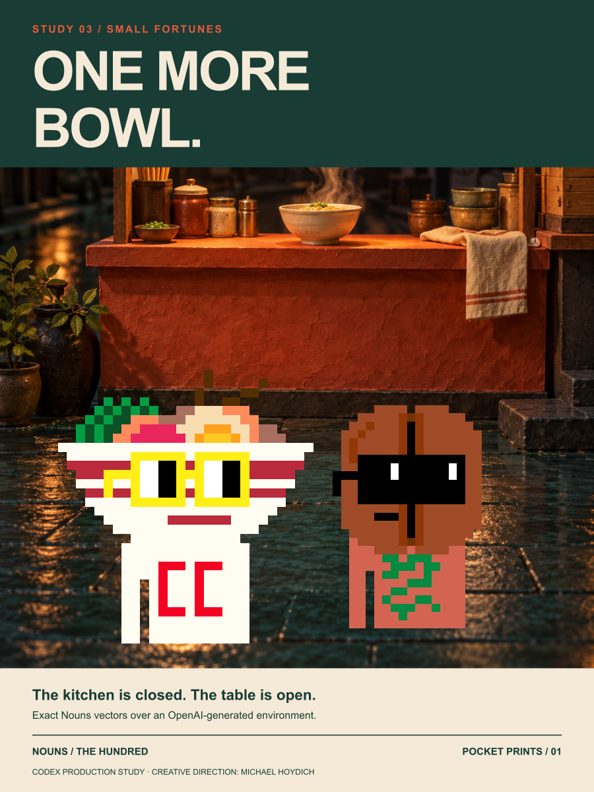
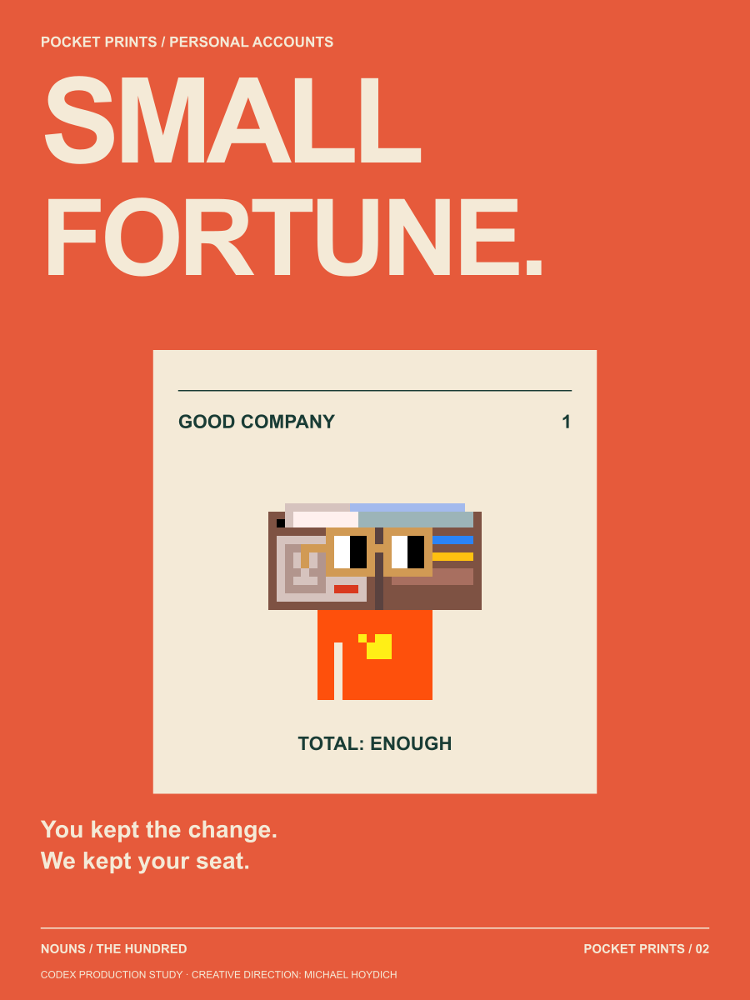
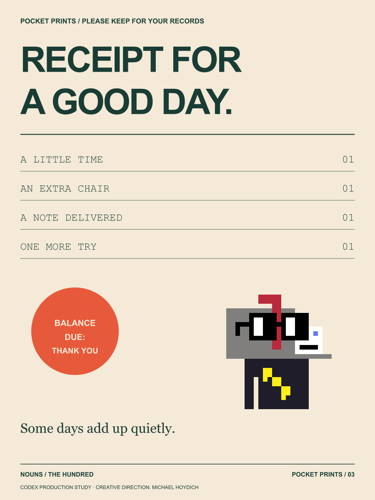
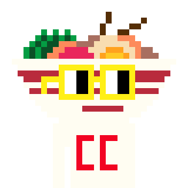
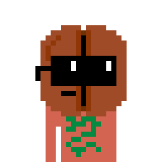
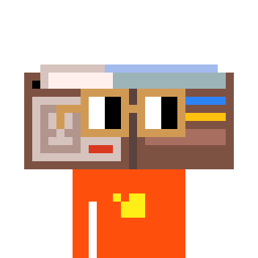
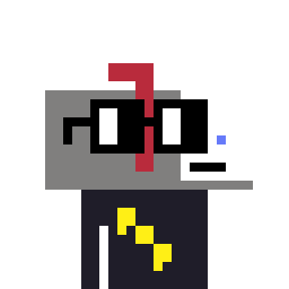

ARTWORK 01 / 03
One More Bowl
The kitchen is closed. The table is open.
Tangle and Bean find one last place at the counter. The warmth is a bigger story than the meal.
Very small occasions. Very good reasons.
The night market has a second menu: time, company and an extra chair. Tangle serves a little warmth. Bean remembers your order. Foldsworth keeps the smallest promises. Post delivers the note you nearly did not write.

The kitchen is closed. The table is open.
Tangle and Bean find one last place at the counter. The warmth is a bigger story than the meal.

You kept the change. We kept your seat.
Foldsworth counts the parts of an evening that never fit on a bill.

Please keep for your records.
Post files the tiny acts that made an ordinary day worth remembering. Balance due: a thank you.

LOCAL CHARACTER 054Makes a bowl feel like an invitation.
The noodle stall's exuberant storyteller never quite finishes one anecdote before beginning another. Tangle's regulars come for supper and stay to help find the ending.

LOCAL CHARACTER 056Remembers the person, then the order.
The late coffee stand's thoughtful host knows when to chat and when to refill. Bean collects the names of projects first imagined over a paper cup.

LOCAL CHARACTER 084Keeps the smallest promises in careful folds.
A wallet historian fascinated by the unofficial archives people carry. Foldsworth is curating an exhibition of ticket stubs whose owners still remember the whole night.

LOCAL CHARACTER 087Delivers a good word before it gets cold.
The city's correspondence host supplies stamps, prompts and an unhurried table. Post believes writing to someone can make both places feel a little closer.
A nod to neighborhood receipts, pocket poetry, night-market ephemera and the perfectly ordinary favor. All scenes and sayings are new.
Concept, copy and graphic design: Codex.
Environment image: OpenAI built-in image generation.
Creative direction: Michael Hoydich.
Character geometry: original Nouns framework.
Editorial attribution only. Canonical Nouns art is CC0. These are new local combinations of original traits, not minted token identities or ownership claims. The vector posters retain exact original character geometry. PNGs are visual proofs; physical printing has not been tested.